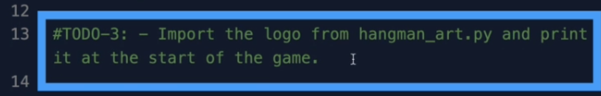

احسنت صنعا في الوصول الى المرحلة الاخيرة من مشروع بناء لعبة الجلاد في بايثون
في التحدي الخامس سوف نقوم بانهاء اللعبة كاملة من خلال تحسين تجربة المستخدم الان اللعبة الخاصة بنا كاملة في كيفية اللعب وكانت تستخدم فقط ثلاث كلمات advark, baboon and camel ولكن في مرحلة ما من لعبة اللعبة بثلاث كلمات فقط سوف تصبح مملة في الحقيقة تم اختار هذه الكلمات لك لتستخدمها في بناء هذه اللعبة بحيث طول كل كلمة مختلف لكي تعرف عدد الحروف الخ
من المهم جدا في حياتك كمبرمج ان تجعل الامور سهلة بالنسبة لك عندما تكون تبرمج وعندما تنتهي من ال logic الخاص بالكود الخاص بك وكل شيء يعمل كما هو متوقع في تلك اللحظة تقوم بحذف الاجزاء من الكود الذي كنت تستعملها من اجلك
لقد قمت بنقل رسومات اللعبة و اللوغو الخاص باللعبة في هذا الملف
و قائمة كلمات طويلة جدا في هذا الملف لكي نستعملها في الكود الخاص بنا وسوف نقوم باستخدامها بدل الثلاث كلمات السابقة
وهذا هو اول مرحلة في تحدي اليوم وهو جعل القائمة word_list تستعمل الملف الجديد الذي يحتوي على عدد كبير من الكلمات ولفعل ذلك عليك ان تذكر نفسك او ترجع للدروس اين تحدثنا عن كيف تستعمل ال modules في بايثون وكيف تقوم بعمل import لملفات مختلفة او اضغط هنا واقرأ قليلا
في المرحلة الثانية انزل للاسفل من الملف عند السطر الذي يقوم بطباعة الصور فالان الصور ليست في نفس الملف مع الكود بل في ملف اخر اذن اجعل هذا خطأ في الكود يختفي واجعل الصور تظهر من جديد من خلال استعمال الملف hangman_art.py
في المرحلة الثالثة قم بعمل import للوغو وقم بطبعه
في المرحلة الرابعة سوف نقوم بالتحقق من الحرف الذي حزره اللاعب ان كان قد حزره من قبل اي ادخل نفس الحرف مرتين او اكثر فسوف نخربه انه ادخل الحرف من قبل من دون ان ننقص له حياة
في المرحلة الخامسة سوف نقوم بالتحقق ايضا ان كان الحرف الذي ادخله المستخدم ليس في الكلمة المختارة فسوف نقوم بطباعته ونخبره ايضا ان الحرف الذي اختاره لايوجد في الكلمة المختارة
والنتيجة النهائية سوف تكون كالتالي و تحقق ان كل شيء يعمل كما هو متوقع

حظا موفقا في التحدي